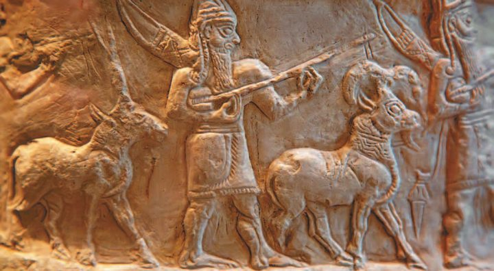
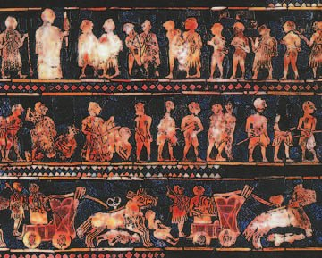
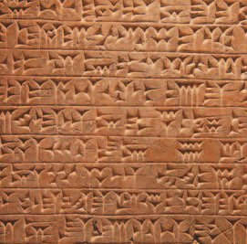
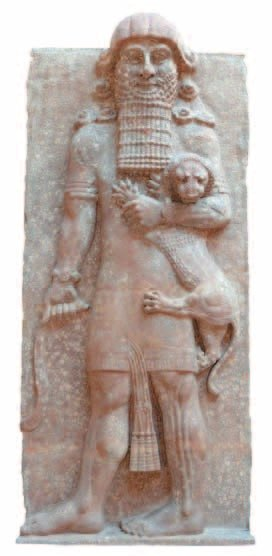
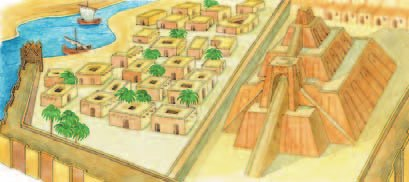

Между Тигром и Евфратом
Территория между двумя великими реками — равнинная на юге и холмистая на севере — называется . По-древнегречески это значит «Междуречье». Почти круглый год там очень жарко.
Жители этой земли одними из первых на Земле стали заниматься земледелием: разливы Тигра и Евфрата удобряли и увлажняли почву.
Чтобы защититься от наводнений, местные жители возводили высокие насыпи — дамбы, а для орошения полей и отвода воды рыли каналы. Так получалась .
Равнинная на юге и холмистая на севере территория между двумя великими реками называется «Месопотамия», что на древнегреческом означает «Междуречье». Почти круглый год в Междуречье очень жарко.
Жители этой территории одними из первых на Земле стали заниматься земледелием. Разливы Тигра и Евфрата удобряли и увлажняли землю. Для защиты от наводнений местные жители возводили высокие насыпи — дамбы, сооружали каналы для орошения полей и отвода воды, создавая оросительную систему.
1. Чем Междуречье похоже на Древний Египет и чем от него отличается?
2. Зачем нужны были и дамбы, и каналы — разве одного мало?
3. Почему земледелие началось именно здесь — одним из первых на Земле?

▲ Найди на карте Киш, Ур, Урук и Лагаш — города-государства из текста.
Первые государства
Первые государства образовались в Междуречье на рубеже 4—3-го тысячелетий до н. э. Это были : каждое небольшое, включало несколько поселений и имело центром один крупный город. Там находился дворец правителя, и правителю подчинялось войско.
Важными городами-государствами были Киш, Ур, Урук, Лагаш.
Лесов и камня в Междуречье не было, поэтому постройки возводили из глиняных кирпичей. За деревом ценных пород снаряжали походы в горы на северо-восток или закупали его.
В Южное Междуречье в древности пришли поселенцы — местность, где они расселились, учёные назвали Шумером, а самих поселенцев — . Вскоре туда пришли новые племена, : они расселились в стране и стали жить вместе с шумерами.
Северную часть, где аккадцев было больше, назвали Аккадом, а всё Южное Междуречье — Шумером. Со временем оба народа стали одной общностью: себя они называли «черноголовые» и считали одним народом. Поэтому цивилизацию Древней Месопотамии и называют шумеро-аккадской.
Шумеро-аккадские города-государства часто воевали друг с другом. Воины были вооружены бронзовым оружием, носили бронзовые шлемы, тело защищал кожаный панцирь. Грозным оружием были боевые повозки на четырёх массивных колёсах: на такой размещались возничий и несколько воинов, они засыпали противника дротиками и поражали копьями.
В 3-м тысячелетии до н. э. всё Южное Междуречье объединил под своей властью царь . Завоевав соседние страны, он создал огромную — Аккадскую, по имени столицы, города Аккад. Но через 100 лет она распалась.
Первые государства образовались в Междуречье на рубеже 4—3-го тысячелетий до н. э. Это были города-государства — каждое из них было небольшим, включало несколько поселений и имело центром один крупный город. Здесь находился дворец правителя. Правителю подчинялось войско. Важными в Междуречье были города-государства Киш, Ур, Урук, Лагаш.
В Междуречье из-за отсутствия лесов и камня постройки возводили из глиняных кирпичей. За деревом ценных пород снаряжали походы в горы на северо-восток или закупали его.
В Южное Междуречье в древности пришли поселенцы, местность, где они расселились, учёные стали называть Шумером. Вскоре в Шумер пришли новые племена — аккадцы. Они расселились в стране и стали жить вместе с шумерами в их государствах. Северную часть страны, где аккадцы преобладали в составе населения, стали именовать Аккадом, а всё Южное Междуречье, где в населении преобладали шумеры, — Шумером. Со временем шумеры и аккадцы образовали одну общность — сами они называли себя «черноголовые» и считали одним народом. Поэтому цивилизация Древней Месопотамии называется шумеро-аккадской.
Шумеро-аккадские города-государства часто воевали друг с другом. Их воины были вооружены бронзовым оружием и носили бронзовые шлемы. Тело воина защищал кожаный панцирь. Грозным оружием были боевые повозки на четырёх массивных колёсах. На такой повозке размещались возничий и несколько воинов. В бою они засыпали противника дротиками и поражали копьями.
В 3-м тысячелетии до н. э. всё Южное Междуречье объединил под своей властью царь Саргон. Затем в результате завоевания им соседних стран образовалась огромная держава, именовавшаяся Аккадской, по имени её столицы — города, который тоже назывался Аккад. Но через 100 лет она распалась.

▲ Какого привычного вооружения не имели воины Шумера и что его заменяло?
- Объясни, что представлял собой «город-государство».
- Найди и покажи на карте города-государства Междуречья.
4. Почему в Междуречье строили из глиняных кирпичей, а в Египте — из камня?
5. Города-государства часто воевали друг с другом. Вспомни §5: где ты уже читала про такое?
6. Держава Саргона распалась через 100 лет, а Египет после Мины держался тысячи лет. В чём может быть разница?
Письменность и открытия
Величайшим достижением шумеров было изобретение письменности. Она состояла из нескольких сотен значков — клиновидных чёрточек, которые обозначали целые слова и слоги.
Писали на табличках из мягкой глины: значки выдавливали заострённой трёхгранной палочкой. Потом табличку высушивали или обжигали. За внешний вид письменность Междуречья и назвали .
Учёные нашли множество клинописных текстов на табличках, статуях и стенах: царские надписи, переписку, записи сборщиков налогов, сказки и легенды.
Полторы тысячи лет месопотамцы переписывали легенду о , царе города Урука. По преданию, он добрался до края мира и переплыл ограничивавший его Океан в поисках источника вечной жизни. Цветок, дарующий вечную жизнь, Гильгамеш добыл — но его похитила змея, и царь так и остался смертным.
Шумеры придумали , в основе которой было число 60. Кое-где мы пользуемся ею и сегодня: делим окружность на 360 градусов, час — на 60 минут, минуту — на 60 секунд.
А ещё шумеры много знали об астрономии: из поколения в поколение они следили за солнцем, луной и звёздами.
Величайшим достижением шумеров было изобретение письменности. Она состояла из нескольких сотен значков — клиновидных чёрточек, которые обозначали целые слова и слоги. Писали жители Междуречья на табличках из мягкой глины, выдавливая заострённой трёхгранной палочкой значки. Затем табличку высушивали или обжигали. За свой внешний вид письменность Междуречья получила название клинопись.
Учёные нашли большое количество клинописных текстов, оставленных жителями Междуречья на табличках, статуях, стенах. Это и царские надписи, и переписка, и записи сборщиков налогов, и сказки, и легенды. Сохранилась переписывавшаяся месопотамцами на протяжении полутора тысяч лет легенда о царе города Урука — Гильгамеше. По преданию, он добрался до края нашего мира и переплыл ограничивавший его Океан в поисках источника вечной жизни. Гильгамеш добыл дарующий её цветок, но его похитила змея, и царь так и остался смертным.
Шумеры придумали систему счёта, в основе которой было число 60. В ряде случаев мы и сегодня пользуемся такой системой, например, делим окружность на 360 градусов, час — на 60 минут, минуту — на 60 секунд.
Шумеры обладали обширными познаниями в области астрономии. Из поколения в поколение они следили за солнцем, луной и звёздами.

▲ Подумай, каким образом возникло клинописное письмо. Что общего у письменности шумеров и египтян? В чём различия?

- Какие достижения шумеры привнесли в науку и почему?
7. Почему шумерские значки получились клиновидными, а египетские — картинками?
8. Что общего у истории расшифровки клинописи и иероглифов?
9. Гильгамеш искал вечную жизнь и не нашёл. Какой смысл видели в этом сами месопотамцы?
10. Где ты сегодня пользуешься шумерским счётом по 60?
Боги
Жители Междуречья почитали многих богов. Среди них — бог неба, Энлиль — бог воздуха и владыка ветра, — бог пресной воды и создатель людей.
Месопотамцы считали, что именно Энки подарил людям плуг и мотыгу и научил делать кирпичи.
Дочь Ану, , почитали как богиню плодородия, любви, войны и покровительницу Урука. А бог солнца , по их представлениям, утром выходил из-за гор, чтобы освещать землю, а ночью путешествовал по подземному миру.
В каждом шумерском городе возводили храмы в честь разных божеств — прежде всего того, кого считали покровителем города. Храмовый комплекс включал многоступенчатую башню, .
Жители Междуречья почитали многих богов. Среди них Ану — бог неба, Энлиль — бог воздуха и владыка ветра, Энки — бог пресной воды и создатель людей. Месопотамцы считали, что Энки подарил людям плуг, мотыгу и научил делать кирпичи. Дочь Ану, Иштар, почитали как богиню плодородия, любви, войны и покровительницу Урука. Бог солнца Шамаш, по представлениям жителей Междуречья, утром выходил из-за гор, чтобы освещать землю, а ночью путешествовал по подземному миру.
В каждом шумерском городе возводили храмы в честь разных божеств, прежде всего божества, которого считали покровителем города. Храмовый комплекс включал многоступенчатую башню — зиккурат.

- Сравни шумерские зиккураты и египетские пирамиды. Что у них общего? В чём различия?
11. Энки подарил людям плуг, мотыгу и умение делать кирпичи. Почему именно эти три вещи?
12. Иштар была богиней и плодородия, и любви, и войны сразу. Что это говорит о жизни в Междуречье?
13. Шамаш утром выходит из-за гор, а ночью идёт по подземному миру. Вспомни §9: у какого египетского бога был такой же путь?
Подведём итоги
- Назови первые государства Междуречья. Найди и покажи на карте, где они находились.
- Какие достижения жителей Месопотамии говорят об их высоком уровне развития?
- Подумай, каким образом возникло клинописное письмо. Что общего у письменности шумеров и египтян? В чём различия?
- Как ты думаешь, почему главные боги шумеров были связаны с хозяйственной деятельностью?
Прочитай список понятий: Урук, Гор, Иштар, Энлиль. Какое из них лишнее? Объясни почему.
Сформулируй ответ на главный вопрос параграфа — какие природные условия Междуречья способствовали возникновению древнейших государств? Приведи два-три довода.
Проверь себя
Нажимай по очереди — от самого древнего события к самому близкому к нам.
1. Что означает слово «Месопотамия»?
2. Почему в Междуречье строили из глиняных кирпичей?
3. Что такое город-государство?
4. На чём и чем писали в Междуречье?
5. Какое число шумеры положили в основу счёта?
6. Что такое зиккурат?
Расскажи вслух
Природа Междуречья
- Месопотамия — «Междуречье» между Тигром и Евфратом, равнина на юге, холмы на севере, почти круглый год жарко.
- Одни из первых на Земле начали заниматься земледелием: разливы удобряли и увлажняли землю.
- Дамбы — от наводнений, каналы — орошать поля и отводить воду; вместе оросительная система.
Первые государства
- Рубеж 4—3-го тысячелетий до н. э., города-государства: посёлки вокруг крупного города, дворец правителя, войско. Киш, Ур, Урук, Лагаш.
- Строили из глиняных кирпичей — нет лесов и камня; шумеры и аккадцы, «черноголовые», шумеро-аккадская цивилизация.
- Часто воевали: бронзовое оружие и шлемы, кожаный панцирь, повозки на четырёх колёсах. Саргон объединил Южное Междуречье, но держава распалась через 100 лет.
Клинопись и наука
- Несколько сотен клиновидных значков — слова и слоги; выдавливали палочкой на мягкой глине, табличку сушили или обжигали.
- Нашли царские надписи, переписку, записи сборщиков налогов, сказки; легенду о Гильгамеше переписывали полторы тысячи лет.
- Счёт по 60: 360 градусов, 60 минут, 60 секунд. Астрономия: следили за солнцем, луной и звёздами.
Боги и зиккураты
- Ану — небо, Энлиль — воздух и ветер, Энки — пресная вода и создатель людей, дал плуг, мотыгу и кирпичи.
- Иштар — плодородие, любовь, война, покровительница Урука; Шамаш — солнце, утром из-за гор, ночью по подземному миру.
- В каждом городе храмы богу-покровителю; храмовый комплекс включал многоступенчатую башню — зиккурат.